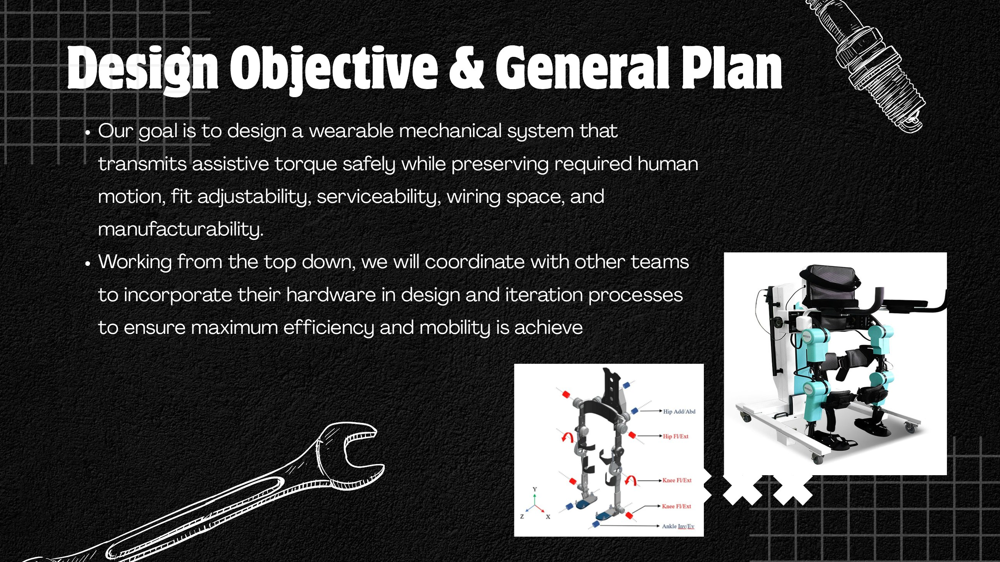
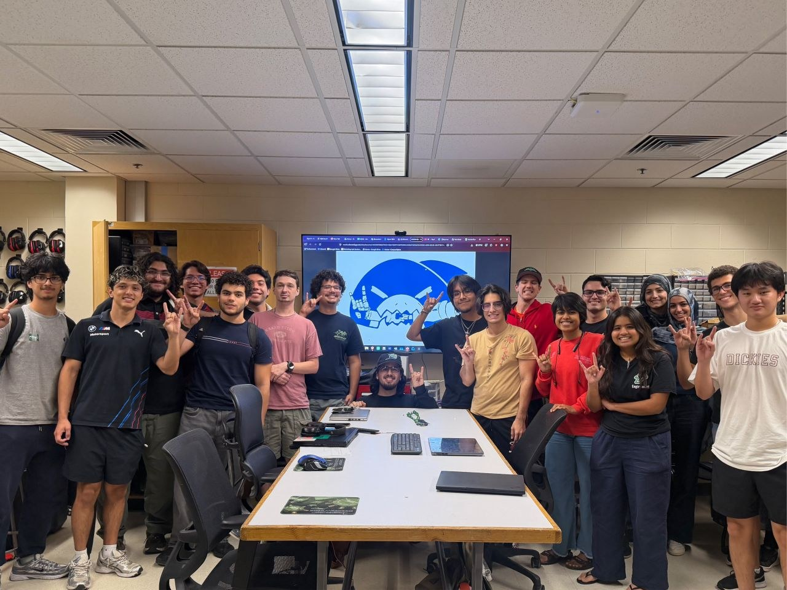
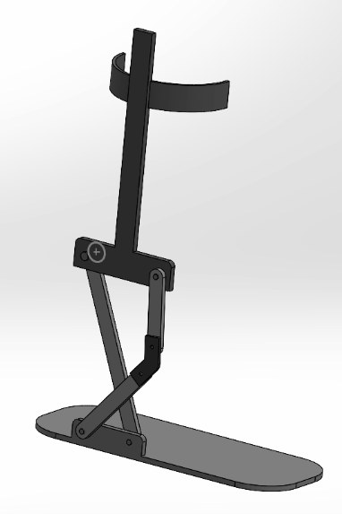
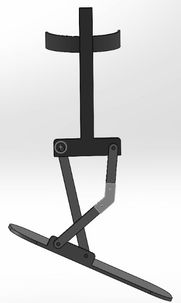
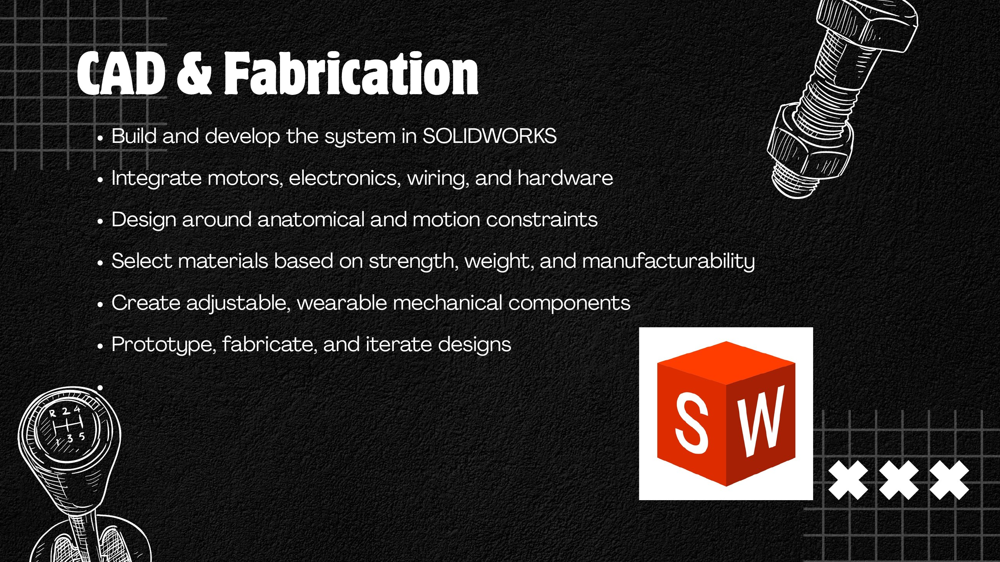

My role
I lead the mechanical subteam of IEEE EXO, a multidisciplinary team building a hip-knee-ankle, sagittal-plane exoskeleton. The mechanical subteam has about 10 consistent members, and the full team has about 7 subteam leads.
I supervise separate groups working on the knee joint, back brace, ankle, and battery and electronics enclosure. I designed the ankle subsystem in SOLIDWORKS, including spring-cable pulley systems and joint linkages, using biomechanical feedback from the team.
I also oversaw a design review in which two teams presented competing knee-joint proposals. The selected design is now in development.

Ankle subsystem: early design concepts
These are early SOLIDWORKS concepts for the ankle subsystem, showing the linkage and pulley layout before refinement.


Design requirements being developed
- Research human gait and lower-limb biomechanics.
- Define safe joint ranges and torque requirements.
- Compare existing exoskeleton mechanisms and actuator placements.
- Integrate motors, electronics, wiring, and hardware into the mechanical design.
- Select materials based on strength, weight, comfort, and manufacturability.
- Create adjustable wearable components and iterate through prototypes.
